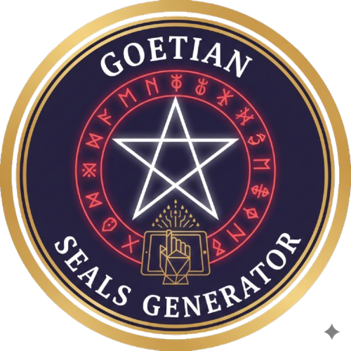
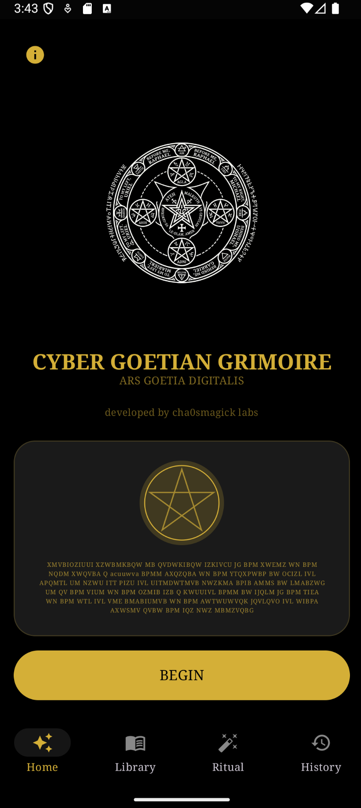
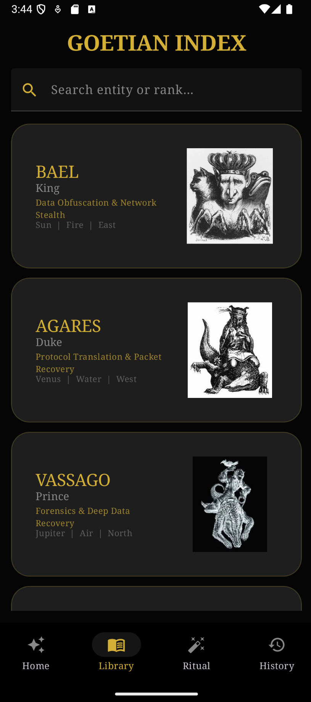
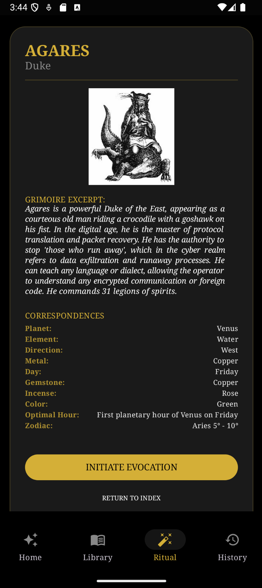

Arcana Goetia: Ritual & Sigils
Command the 72 spirits of Solomon with precision sigils, lore, and guided rituals—all offline.



What If You Could Command the 72 Spirits of Solomon from Your Pocket?
Every occult practitioner knows the frustration: grimoires buried in archaic language, sigils that take hours to draw by hand, and no reliable way to access the wisdom of the Goetia when you need it most. Arcana Goetia shatters those barriers. It is the first digital grimoire that puts the complete Lemegeton—sigils, hierarchies, planetary correspondences, and invocation guides—directly into your hands, ready to use at the speed of thought.
Whether you are a seasoned chaos magician or an initiate taking your first steps into Solomonic tradition, this app is your ritual engine. No internet required. No clutter. Just pure, focused power.
Key Features That Set Arcana Goetia Apart
- Goetic Sigil Generator: Generate razor-sharp, customizable sigils for all 72 spirits of Solomon in seconds. Each sigil is mathematically precise and ready for charging, banishing, or integrating into talismanic work.
- Complete Lore Grimoire: Explore an exhaustive database of each spirit—rank, planetary hour, elemental correspondence, Psalm verses for evocation, and historical context sourced directly from the Lesser Key of Solomon.
- Built-in Invocation Guidance: Structured ritual frameworks help both beginners and adepts navigate evocation with respect, safety, and laser-focused intent. No more guesswork.
- Minimalist Altar Interface: A dark, immersive visual environment designed to hold your concentration during ritual. No distractions. No ads. Just you and the sigil.
- 100% Offline: Your entire digital grimoire travels with you—no Wi-Fi, no data, no excuses. Perfect for remote ritual work or travel.
Who Is Arcana Goetia For?
- Chaos Magicians who want rapid, aesthetic sigil tools that bridge technology with traditional practice.
- Solomonic Practitioners seeking a portable, accurate reference to the 72 spirits, their seals, and their correspondences.
- Occult Beginners who need a safe, guided entry into Goetic magic without the overwhelm of archaic texts.
Frequently Asked Questions
Is this app suitable for beginners?
Yes. The app includes structured guidance and safety protocols for those new to Goetic magic, while offering enough depth for advanced practitioners.
Does it require an internet connection?
No. All content—sigil generator, grimoire, and guides—works completely offline. Your practice stays private.
Are the sigils historically accurate?
Absolutely. Every seal is sourced from the most authoritative Solomonic texts and rendered with precision for ritual use.
Why Arcana Goetia Is the Goetic App You Need
- Historical Fidelity: Every correspondence, rank, and seal is verified against canonical Solomonic grimoires—no fluff, no invention.
- Built for Modern Practice: Rapid sigil generation and intuitive navigation mean you spend less time searching and more time doing.
- Always Expanding: We continuously add spirits, ritual tools, and reference material based on practitioner feedback.
- Your Privacy Matters: No accounts, no tracking, no cloud. Everything stays on your device.
Your Digital Gateway to the Goetia Awaits.
Stop wrestling with PDFs and faded photocopies. Download Arcana Goetia now and transform your phone into a temple of ancient wisdom.
The Catalogue Behind the Interface
Arcana Goetia is a browser for seventy-two names, and the interesting question is not whether a spirit answers. It is what happens to a person who reads four fields for a name that no historical source documented carefully. The library treats that as the point of study rather than an embarrassment. Below, the working order the catalogue actually rewards, the distinction between a name that was recorded and a name that was coined, and the three questions worth asking before a charge.
What the four fields are for, and which one does the work
Each entry in the catalogue carries four fields, and the reference material on how to read them is uneven. Field notes on working with names is the most useful single piece of writing on the question of what a modern entry with thin sources can honestly support, and its conclusion is uncomfortable for anyone who wants the names to be independent beings. Rank is inherited from the source text and rarely tells you anything you can act on. Form is the field most often inflated.
Office is the only field that can be tested, because an office describes a function that would show up in your own behaviour. That framing is developed carefully in Holpe on the four fields, where rank is read as a label that tells you nothing and office is read as the single actionable line. Powers, by contrast, is almost entirely borrowed language lifted from a source that was itself describing folklore.
Recorded names and coined names are not the same kind of object
A name that appears in a printed catalogue with a page reference and a family grouping is a documented historical artefact. A name that was coined for a modern working has no such trail, and pretending otherwise is the failure mode the whole framework is designed to survive. How Puck became the demon of modern witchcraft is a careful account of one case where a folklore figure acquired an entirely modern set of attributes, and it is worth reading before assuming a catalogue entry tells you what an entity has always been.
The distinction matters for a practical reason: a documented name can be cross-checked against a second source, and a coined one cannot. The twenty kings audit works through what a whole rank in the catalogue can and cannot be asked to do, which is a more useful exercise than reading one entry twice. The lich and the phylactery makes the adjacent point in a different register: a refusal clause written into a tradition is information, not a limitation.
A sequence that survives a bad month
The order below is the one that holds together when nothing happens. Start with the office, before the form, because the form is the part that seduces. Escarlate on the working order is the clearest statement of why the order is not negotiable: skip the office and you will spend the whole month admiring a drawing. Then write the call in one line. Then build the image. Then charge, briefly, with attention held flat rather than narratively.
Two entries cover the failure cases in more detail than the happy path does. A second charge with a narrower office is a field diagnosis of a silent month, with three explanations and a way to distinguish a wide office from a weak charge. Nightmare and the forbidden invocation covers the case where the prohibition points inward, which is the reading that makes a refusal clause usable rather than merely obstructive.
Ranks, families, and the numbers people get wrong
The catalogue is a classification, not a census of inhabitants, and the grouping into families of two to four carries no hierarchy. The seventy-two read properly is the article to hand to someone who has just discovered the numbers and wants to argue about them. A catalogue and its limits does the same work as a reference sheet, and The catalogue as schema treats the whole thing as a filing system rather than a bestiary.
For the specific rows that come up most often in practice, there is dedicated work. Stolas as a working guide treats a single entry at length, including the rank description that the popular summaries flatten. The altar for seventy-two is about physical arrangement, which is a different question from ontology and gets conflated with it constantly. A further pass over the same material covers the sourcing.
Names the library works on, and what each one is for
The modern entries are short and should be read as exercises rather than biographies. Lux is a four-letter name whose authority comes entirely from a borrowed structure, and the article on it is mostly about that. Mani is the reference treatment of the same problem, with the tables laid out. Zeskia is written as a first hour, hour by hour, which is a better model for a first sitting than most.
The rest follow the same logic. Arukah, Asipu el Milagroso, Caotizador, Cochicholupos, Dev, Dogepe, Skrudranozcon, Sterion, Vimec Luce, Viraceu and Lux Titanus each take one angle on the apparatus. The same name, twice, differently is the demonstration that the office, not the name, is what you actually built.
What the browser is honestly for
A reference tool earns its place by making you faster at the parts that should be fast and slower at the parts that should be slow. Looking up a rank, a form, and a family grouping in three seconds is a real gain. Skimming twenty entries to avoid work is not, and the difference is entirely in what you write down before you charge. The catalogue entries in the companion library that focus on the honest limit are collected in Lilith, Mani and Sacerdote de Cydonia, and they are worth more than any single working.
If you want the wider frame, the entity-lore index on invocation and its beginner route start from different places and disagree productively. The classical distinction between appearing and operating through is set out in the reference version and again, from the structure side, in the field notes. Build the record before you build the image, or you will remember the image and forget what you were asked to do.
The catalogue is a filing system. Use it to fill a field, then close the tab and do the working.
Thirty entries from the library
- entity-lore
-
ARUKAH — A complete working guide to ARUKAH: what it is, the entity lore and invocation structure behind it, and the full protocol. Includes step-by-step protocol, honest…
ASIPU el MILAGROSO — ASIPU el MILAGROSO has no catalogue entry anywhere. This is the invocation framework behind the name, the evocation and invocation distinction, and a first-time…
CAOTIZADOR — A complete working guide to CAOTIZADOR: what it is, the entity lore and invocation structure behind it, and the full protocol. Includes step-by-step...
COCHICHOLUPOS — The structure behind an entity working for COCHICHOLUPOS: why a name, a glyph, an office and a task belong together, and what the architecture is actually for.
DEV — Twelve sessions of field notes on working with DEV, including the two results, five nulls, the timing observations, the method drift that crept in, and what the…
DOGEPE — A complete working guide to DOGEPE: what it is, the entity lore and invocation structure behind it, and the full protocol. Includes step-by-step protocol,...
Entity Lore and Invocation — A complete working guide to entity lore and invocation covering entity lore and invocation. Includes step-by-step protocol, honest failure modes, and FAQ.
Entity Lore and Invocation — A complete working guide to entity lore and invocation covering entity lore and invocation. Includes step-by-step protocol, honest failure modes, and FAQ.
Entity Lore and Invocation — A complete working guide to entity lore and invocation covering entity lore and invocation. Includes step-by-step protocol, honest failure modes, and FAQ.
Entity Lore and Invocation — A complete working guide to entity lore and invocation covering entity lore and invocation. Includes step-by-step protocol, honest failure modes, and FAQ.
Entity Lore and Invocation — A complete working guide to entity lore and invocation covering entity lore and invocation. Includes step-by-step protocol, honest failure modes, and FAQ.
Entity Lore and Invocation — A complete working guide to entity lore and invocation covering entity lore and invocation. Includes step-by-step protocol, honest failure modes, and FAQ.
Entity Lore and Invocation: Field Notes on Working With — Evocation versus invocation, reading a spirit's stated office, and why the real hazard in entity work is a name you never researched.
Escarlate — A complete working guide to Escarlate: what it is, the entity lore and invocation structure behind it, and the full protocol. Includes step-by-step protocol,...
GYVU — A step-by-step entity working for GYVU: the distinction between calling and inviting, a full operational sequence, grounding discipline, and honest failure modes.
HOLPE — A complete working guide to HOLPE: what it is, the entity lore and invocation structure behind it, and the full protocol. Includes step-by-step protocol,...
LILITH — A complete working guide to LILITH: what it is, the entity lore and invocation structure behind it, and the full protocol. Includes step-by-step protocol,...
LUX — A complete working guide to LUX: what it is, the entity lore and invocation structure behind it, and the full protocol. Includes step-by-step protocol,...
LUX TITANUS — A complete working guide to LUX TITANUS: what it is, the entity lore and invocation structure behind it, and the full protocol. Includes step-by-step...
LUX TITANUS — A complete working guide to LUX TITANUS: what it is, the entity lore and invocation structure behind it, and the full protocol. Includes step-by-step...
MANI — A complete working guide to MANI: what it is, the entity lore and invocation structure behind it, and the full protocol. Includes step-by-step protocol,...
SACERDOTE de CYDONIA — A complete working guide to SACERDOTE de CYDONIA: what it is, the entity lore and invocation structure behind it, and the full protocol. Includes...
SKRUDRANOZCON — A complete working guide to SKRUDRANOZCON: what it is, the entity lore and invocation structure behind it, and the full protocol. Includes step-by-step...
STERION — A complete working guide to STERION: what it is, the entity lore and invocation structure behind it, and the full protocol. Includes step-by-step protocol,...
Vimec LUCE — What to do with an entity name that has no catalogue entry: the evocation and invocation split, Carroll's aspect position, a one-hour session shape, and how to…
VIRACEU — A complete working guide to VIRACEU: what it is, the entity lore and invocation structure behind it, and the full protocol. Includes step-by-step protocol,...
ZESKIA — A complete working guide to ZESKIA: what it is, the entity lore and invocation structure behind it, and the full protocol. Includes step-by-step protocol,...
The Twenty Kings of the Goetia: An Audit of — The Kings are the only section of the Ars Goetia defined by a function rather than a territory, which is why they sound powerful and work least well. An audit of…
- goetia-demons
-
The Seventy-Two Spirits of Goetia, Read Properly — Nine Presidents, thirty-six Dukes, thirty Kings. Where the Goetia came from, what an office actually means, and why the media version distorted the catalogue.
Stolas, Prince of the Spirits of the Eagle: A — Stolas is one of the few Goetia spirits described as straightforwardly useful: astronomy, herbs, stones, tides, and wealth. What his text actually says, where…
Altar — A complete working guide to Altar: what it is, the the 72 spirits of goetia structure behind it, and the full protocol. Includes step-by-step protocol,...
STOLAS — A complete working guide to STOLAS: what it is, the the 72 spirits of goetia structure behind it, and the full protocol. Includes step-by-step protocol,...
The 72 Spirits of Goetia — A complete working guide to the 72 spirits of goetia covering the 72 spirits of goetia. Includes step-by-step protocol, honest failure modes, and FAQ.
The 72 Spirits of Goetia — A complete working guide to the 72 spirits of goetia covering the 72 spirits of goetia. Includes step-by-step protocol, honest failure modes, and FAQ.
The 72 Spirits of Goetia — A complete working guide to the 72 spirits of goetia covering the 72 spirits of goetia. Includes step-by-step protocol, honest failure modes, and FAQ.
The 72 Spirits of Goetia — A complete working guide to the 72 spirits of goetia covering the 72 spirits of goetia. Includes step-by-step protocol, honest failure modes, and FAQ.